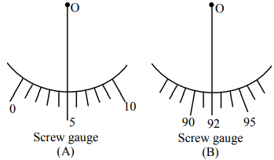

Filter questions
Q1
PHY-2021-0101-S2-Q020
2021 | 16 Mar | Shift 2
—
MCQ
Two identical antennas mounted on identical towers are separated from each other by a distance of 45 km . What should nearly be the minimum height of receiving antenna to receive the signals in line of sight ? (Assume radius of earth is 6400 km )
Answer: B
Q2
PHY-2021-0101-S2-Q025
2021 | 16 Mar | Shift 2
—
Integer
If one wants to remove all the mass of the earth to infinity in order to break it up completely. The amount of energy that needs to be supplied will be x GM 2 where is ________. 5 R x (Round off to the Nearest Integer) ( M is the mass of earth, R is the radius of earth, G is the gravitational constant)

Answer: 3
Q3
PHY-2021-0101-S1-Q024
2021 | 17 Mar | Shift 1
—
Integer
The radius in kilometer to which the present radius of earth (R = 6400 km) to be compressed so that the escape velocity is increased 10 time is _______.
Answer: 64
Q4
PHY-2021-0101-S1-Q005
2021 | 25 Feb | Shift 1
—
MCQ
Two satellites A and B of masses 200 kg and 400 kg are revolving round the earth at height of 600 km and 1600 km respectively. If TA and TB are the time periods of A and B respectively then the value of TB −TA : [ Given : radius of earth = 6400 km, mass of earth = 6 × 1024 kg ]
Answer: C
Q5
PHY-2021-0101-S1-Q030
2021 | 31 Aug | Shift 1
—
Integer
If the sum of the heights of transmitting and receiving antennas in the line of sight of communication is fixed at 160 m, then the maximum range of LOS communication is _______ km (Take radius of Earth = 6400 km )

Answer: 64
Q6
PHY-2022-0101-S1-Q006
2022 | 24 Jun | Shift 1
—
MCQ
The approximate height from the surface of earth at which the weight of the body becomes 1 3 of its weight on the surface of earth is : [Radius of earth R = 6400 km and √3 = 1. 732 ]
Answer: B
Q7
PHY-2022-0101-S1-Q030
2022 | 27 Jun | Shift 1
—
Integer
The height of a transmitting antenna at the top of a tower is and that of receiving antenna is, . The 25 m 49 m maximum distance between them, for satisfactory communication in LOS (Line-Of-Sight) is K√5 × 102 m . The value of K is _____ . (Assume radius of Earth is 64 × 105 m ) [Calculate upto nearest integer value]
Answer: 192
Q8
PHY-2023-0101-S1-Q006
2023 | 10 Apr | Shift 1
—
MCQ
Assuming the earth to be a sphere of uniform mass density, the weight of a body at a depth 𝑑= 𝑅 from the 2 surface of earth, if its weight on the surface of earth is 200 N, will be : (Given 𝑅= radius of earth)
Answer: B
Q9
PHY-2023-0101-S2-Q005
2023 | 10 Apr | Shift 2
—
MCQ
The time period of a satellite, revolving above earth's surface at a height equal to R will be (Given 𝑔= 𝜋2 m s-2, 𝑅= radius of earth)
Answer: C
Q10
PHY-2023-0101-S1-Q020
2023 | 11 Apr | Shift 1
—
MCQ
A transmitting antenna is kept on the surface of the earth. The minimum height of receiving antenna required to receive the signal in line of sight at 4 km distance from it is 𝑥× 10-2 m. The value of 𝑥 is _____. (Let, radius of earth 𝑅= 6400 km)
Answer: A
Q11
PHY-2023-0101-S2-Q008
2023 | 11 Apr | Shift 2
—
MCQ
A space ship of mass 2 × kg is launched into a circular orbit close to the earth surface. The additional velocity to be imparted to the space ship in the orbit to overcome the gravitational pull will be (if g = 10 m s−2 and radius of earth = 6400 km ): 2(√2 −1) 8(√2 −1)
Answer: D
Q12
PHY-2023-0101-S1-Q008
2023 | 12 Apr | Shift 1
—
MCQ
The ratio of escape velocity of a planet to the escape velocity of earth will be:- Given: Mass of the planet is 16 times mass of earth and radius of the planet is 4 times the radius of earth.
Answer: C
Q13
PHY-2023-0101-S1-Q008
2023 | 13 Apr | Shift 1
—
MCQ
A planet having mass 9 Me and radius 4Re, where Me and Re are mass and radius of earth respectively, has escape velocity in km s−1 given by: (Given escape velocity on earth Ve = 11. 2 × 103 m s−1 )
Answer: A
Q14
PHY-2023-0101-S1-Q005
2023 | 24 Jan | Shift 1
—
MCQ
The weight of a body at the surface of earth is 18 N. The weight of the body at an altitude of 3200 km above the earth's surface is (given, radius of earth 𝑅𝑒= 6400 km)
Answer: D
Q15
PHY-2023-0101-S1-Q008
2023 | 25 Jan | Shift 1
—
MCQ
Assume that the earth is a solid sphere of uniform density and a tunnel is dug along its diameter throughout the earth. It is found that when a particle is released in this tunnel, it executes a simple harmonic motion. The mass of the particle is . The time period of the motion of the particle will be (approximately) 100 g (take g = 10 ms−2 , radius of earth = 6400 km )
Answer: B
Q16
PHY-2023-0101-S2-Q008
2023 | 31 Jan | Shift 2
—
MCQ
A body weight W , is projected vertically upwards from earth's surface to reach a height above the earth which is equal to nine times the radius of earth. The weight of the body at that height will be:
Answer: A
Q17
PHY-2024-0101-S2-Q005
2024 | 04 Apr | Shift 2
—
MCQ
A body placed at distance from surface of earth experiences gravitational pull of : 90 kg 2R ( R = Radius of earth, g = 10 m s−2 )
Answer: A
Q18
PHY-2024-0101-S1-Q007
2024 | 05 Apr | Shift 1
—
MCQ
A simple pendulum doing small oscillations at a place R height above earth surface has time period of T1 = 4 s . would be it's time period if it is brought to a point which is at a height 2R from earth surface. Choose the T2 correct relation [R = radius of earth ] :
Answer: D
Q19
PHY-2024-0101-S1-Q022
2024 | 06 Apr | Shift 1
—
Integer
If the radius of earth is reduced to three-fourth of its present value without change in its mass then value of duration of the day of earth will be ______ hours 30 minutes.

Answer: 13
Q20
PHY-2024-0101-S2-Q004
2024 | 09 Apr | Shift 2
—
MCQ
A satellite of 103 kg mass is revolving in circular orbit of radius 2R . If 6 J energy is supplied to the satellite, it would revolve in a new circular orbit of radius (use = 10 m/s2, = radius of earth) g R
Answer: D
Q21
PHY-2024-0101-S1-Q006
2024 | 29 Jan | Shift 1
—
MCQ
At what distance above and below the surface of the earth a body will have same weight? (Take radius of earth as R )
Answer: D
Q22
PHY-2024-0101-S2-Q006
2024 | 30 Jan | Shift 2
—
MCQ
Escape velocity of a body from earth is 11 . 2 km s-1. If the radius of a planet be one-third the radius of earth and mass be one-sixth that of earth, the escape velocity from the plate is:
Answer: D